Seasonality and Trends
A series can rise over several years while repeatedly dipping at the same time each year. The rise and the repeating dip describe different structure. Trend summarizes persistent movement in level or slope; seasonality describes a pattern associated with a fixed known period. A cycle with an evolving or uncertain duration is not the same as a fixed seasonal pattern.
Separating those structures helps explain an observation and determines how it might be forecast. A lower value than last month can be normal for the season even while the underlying trend rises. A repeating seasonal effect can also grow in absolute size as the overall level increases.
There are two broad strategies. A decomposition estimates components such as trend and seasonality and studies the remainder. Differencing changes the modeled quantity so that specified components cancel algebraically. Forecasting models then decide how the components or transformed values evolve. A successful historical decomposition does not supply that extrapolation automatically; trend extension, seasonal updating, and residual dynamics still need to be specified.
Worked calculation: an additive seasonal effect
Suppose a quarterly series is
$$ y_t=50+2t+s_t+\varepsilon_t, \qquad s_t=(-3,1,4,-2), $$
with the seasonal pattern repeated every four observations. At $t=5$, the trend part is
$$ 50+2(5)=60, $$
and the first seasonal position contributes $-3$, so the deterministic value is 57 before the noise term.
The seasonal indices satisfy
$$ -3+1+4-2=0, $$
The zero-sum normalization makes the seasonal effects deviations around the trend rather than an additional overall level. Without a normalization, adding a constant to every seasonal index and subtracting it from the trend would give the same fitted observations. When the size of seasonal swings grows with level, an additive effect in fixed units may be inappropriate; a multiplicative representation or log scale describes proportional effects instead.
The seasonal-differencing figure below shows another way to remove a repeating component: compare each observation with the same position in the previous cycle.
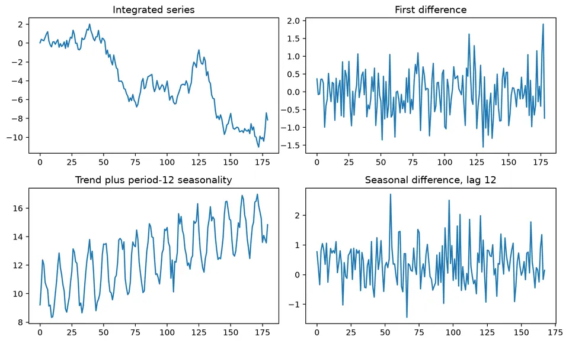
The figure distinguishes ordinary changes from seasonal changes. Ordinary differencing compares adjacent observations, while seasonal differencing compares observations separated by the seasonal period.
Separating trend, seasonality, and remainder
Seasonality and trend describe systematic structure at different time scales. A trend is a persistent long-run movement in the level. Seasonality is a pattern tied to a fixed and known period, such as hour of day, day of week, or month of year. Cycles can also occur, but unlike seasonality their duration is not fixed.
Random or irregular variation is what remains after the modeled systematic components have been removed. The goal is not to eliminate every fluctuation, but to represent the repeatable structure in a way that supports interpretation and forecasting.
Seasonality
Seasonality is a pattern that repeats at a regular interval. Common mechanisms include weather, work schedules, school calendars, billing cycles, and institutional deadlines. Some holidays move between dates or months, so their effects may need explicit calendar predictors rather than a fixed observation lag. A series can also contain more than one period, such as daily and weekly structure in hourly demand.
Characteristics of Seasonality
- Periodicity: the pattern repeats at a fixed interval, such as every 24 hours, 7 days, 12 months, or 4 quarters.
- Additive seasonality: the seasonal effect is roughly constant in absolute size as the level changes.
- Multiplicative seasonality: the seasonal effect changes approximately in proportion to the level.
- Stability: a useful seasonal representation assumes that at least part of the pattern is repeatable, although its amplitude or shape may evolve.
- External drivers: holidays, weather, trading calendars, and other recurring mechanisms can create seasonal structure that may be modeled directly rather than only through lag dependence.
Examples of Seasonal Patterns
Electricity consumption can have daily peaks, retail activity can vary systematically by weekday, tourism can follow annual weather cycles, and administrative processes can generate recurring month- or quarter-end effects.
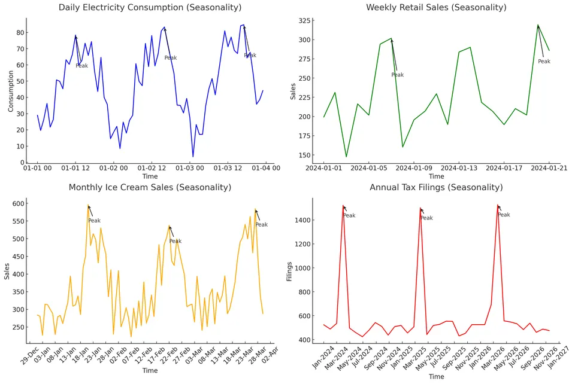
The relevant feature is repeated timing, not simply the presence of peaks. Compare the same position across successive cycles: are the high and low phases consistent, and does their size stay similar? A broad rise and fall with no fixed recurrence is better described as a cycle. Several mechanisms can coexist, such as weekday effects inside a changing annual pattern.
Decomposing Seasonality
A decomposition separates a series into interpretable components. In an additive decomposition,
$$ X_t=T_t+S_t+R_t, $$
where $T_t$ is the trend, $S_t$ is the seasonal component, and $R_t$ is the remainder.
A multiplicative decomposition is often written conceptually as
$$ X_t=T_tS_tR_t. $$
When all components are positive and the seasonal amplitude and residual variation grow with the level, taking logs turns a multiplicative identity into an additive one. This can make proportional seasonal effects easier to model, although the transformed remainder still needs to be checked:
$$ \log X_t=\log T_t+\log S_t+\log R_t. $$
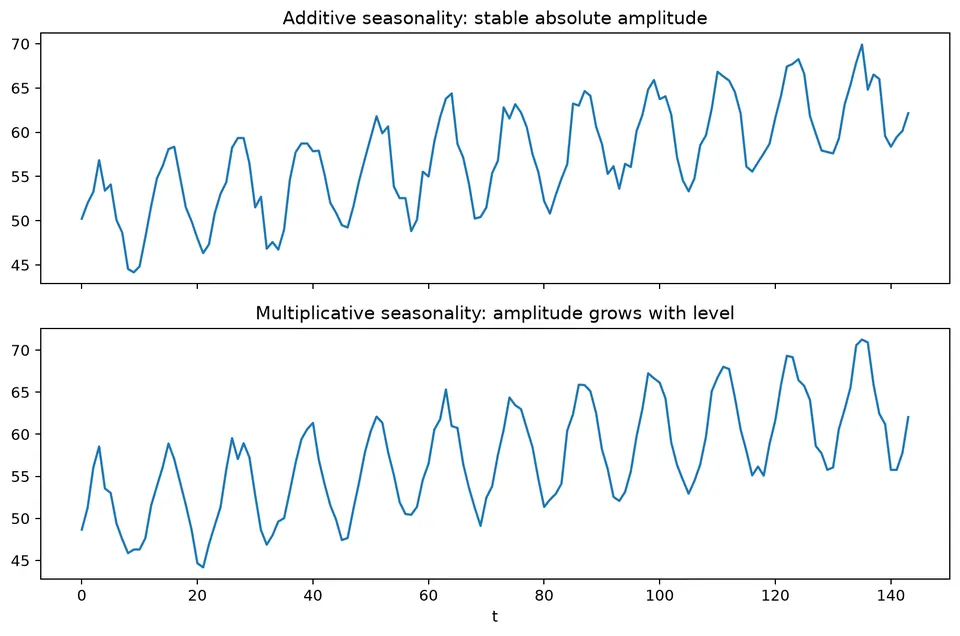
The figure shows the practical distinction: additive seasonal swings remain similar in absolute size, while multiplicative swings widen as the level rises.
Decomposition Methods
Moving-average method. Averaging across a complete seasonal cycle can suppress a repeating seasonal pattern while retaining a slowly changing level. For an odd period, the window has a central observation and the same number of observations on either side. This keeps the estimate aligned with date $t$. For an odd period $d=2q+1$,
$$ \hat m_t=\frac{1}{d}\sum_{j=-q}^{q}X_{t+j}. $$
An even-length window is centered between observations. Centering it on an observation requires averaging two adjacent window averages, which gives the half-weighted endpoints below. The weights still sum to 1 and cover the seasonal cycle symmetrically. For an even period $d=2q$,
$$ \hat m_t= \frac{0.5X_{t-q}+\sum_{j=-q+1}^{q-1}X_{t+j}+0.5X_{t+q}}{d}. $$
These are linear filters of the form
$$ \hat m_t=\sum_j a_jX_{t-j}. $$
A symmetric filter uses observations before and after the date being estimated. That is appropriate for estimating a historical trend, but the latest dates do not yet have the required future values. The resulting boundary gap is not a software nuisance to ignore: filling it requires a different filter or an extrapolation assumption. The weights also determine which oscillations are suppressed, linking the time-domain smoother to its frequency response.
The Spencer 15-point moving average is one historical example of a symmetric smoother:
$$ \frac{1}{320}[-3,-6,-5,3,21,46,67,74,67,46,21,3,-5,-6,-3]. $$
It was designed to preserve low-order polynomial trends while smoothing higher-frequency variation.
Seasonal-trend decomposition using Loess (STL). STL uses local regression to estimate smooth trend and seasonal components, allowing the seasonal shape to evolve according to smoothing choices. Standard STL is additive, so a positive series with proportional seasonal swings is often transformed first. Robust fitting reduces the influence of unusual observations on the estimated components, but does not make every outlier unimportant or supply a forecast for future components.
Additive versus multiplicative decomposition. Choose the representation by examining how seasonal amplitude changes with the level and by considering the data-generating mechanism. A transformation can often make an otherwise multiplicative pattern easier to model additively.
Additional trend smoothing options. Recursive exponential smoothers, polynomial regression, splines, and low-pass filters provide alternative trend estimates. They impose different assumptions about smoothness, boundary behavior, and real-time availability.
Spectral smoothing. A low-pass filter suppresses high-frequency Fourier components and retains slower variation. With a discrete transform written schematically as
$$ X(\omega)=\sum_{t=0}^{n-1}X_te^{-i2\pi\omega t}, $$
one can attenuate or remove frequencies above a chosen cutoff and transform back to the time domain.
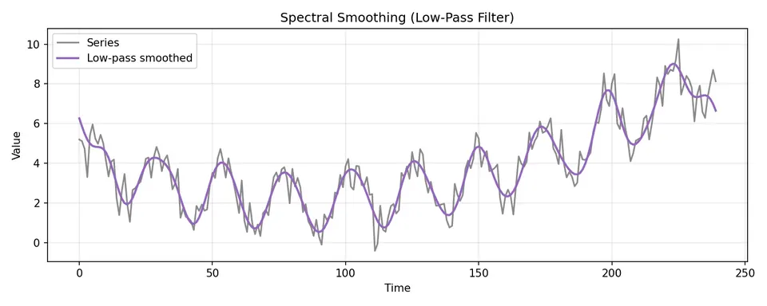
The spectral-smoothing example shows that trend estimation can be viewed as a frequency-selection problem. The cutoff controls how much short-run variation is treated as noise rather than trend.
Practical Decomposition Workflow
When trend and seasonality are both present, a classical additive workflow is:
- estimate the trend with a smoother spanning the seasonal cycle;
- subtract the trend to expose seasonal effects;
- estimate seasonal indices by averaging detrended values within each season;
- normalize and remove the seasonal component;
- inspect the remainder and, if needed, refine the trend estimate.
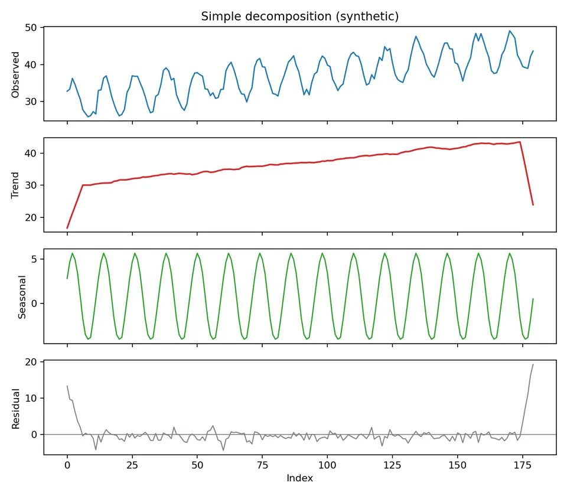
The decomposition figure shows the progression from the observed series to trend, seasonality, and remainder. A useful decomposition leaves the remainder without obvious trend or repeating seasonality that belongs in the estimated components. The remainder can still contain stationary serial dependence, changing variance, or outliers. Decomposition and residual modeling are separate steps, so a remainder is not assumed to be white noise simply because the trend and seasonal curves look reasonable.
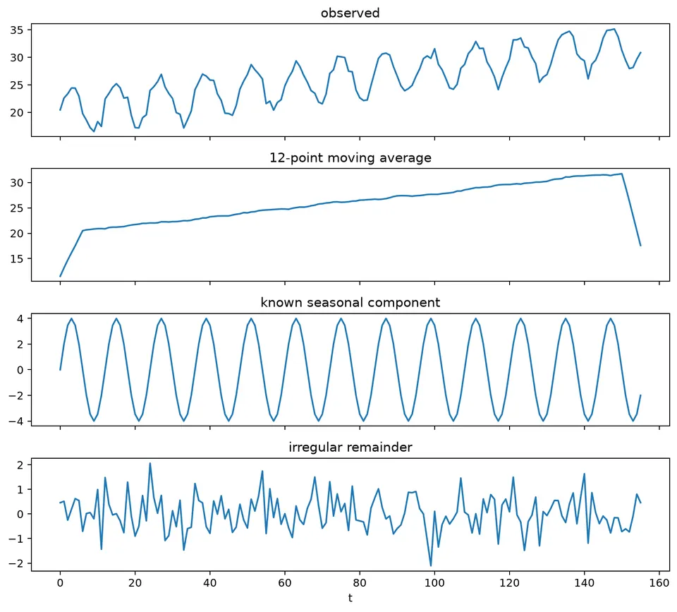
The additive components must reconstruct each observation: estimated trend plus seasonal effect plus remainder equals the original value. That identity does not prove the separate components are uniquely identified by nature. A smoother change can move variation from trend into remainder while preserving the sum. Interpret the components through the estimation assumptions and check whether the remainder retains structure relevant to the intended analysis.
Classical Estimation (Trend + Seasonal)
Classical estimation first removes a slowly varying trend so that seasonal positions are compared at a similar baseline. Otherwise later high-level observations could make a season appear systematically larger simply because they occurred later in a rising series. Let $d$ be the seasonal period and $\hat m_t$ the centered trend estimate. The detrended values are
$$ Y_t=X_t-\hat m_t. $$
For seasonal position $k$, average the available detrended observations:
$$ w_k=\text{average of }\{Y_{k+jd}\}, \qquad k=1,\ldots,d. $$
Normalize the seasonal indices so they sum to zero:
$$ \hat s_k=w_k-\frac{1}{d}\sum_{i=1}^{d}w_i. $$
For multiplicative decomposition, divide by the trend instead of subtracting it. Average the resulting ratios within each season and normalize the factors to mean 1. A factor of 1.10 means 10% above the trend, so it contributes 10 units at a trend of 100 and 20 units at a trend of 200. This interpretation depends on a meaningful positive baseline.
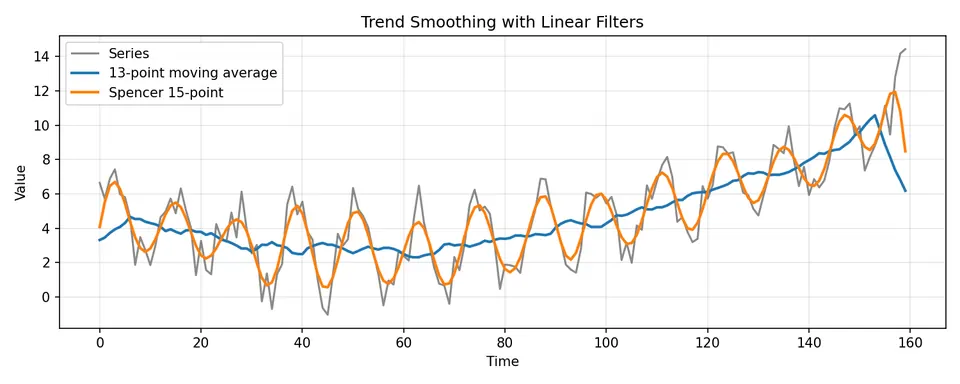
The filter comparison demonstrates that trend estimates depend on the smoothing rule. A smoother that reacts quickly preserves more local movement, while a broader filter produces a smoother trend but can blur turning points and worsen boundary effects.
Differencing as an Alternative
Differencing cancels a specified pattern without estimating its separate component values. If $S_t=S_{t-s}$, then subtracting $X_{t-s}$ removes that exactly repeated seasonal term. The remainder of the subtraction still contains changes in trend and in residual variation. A seasonally differenced value therefore answers “how much changed from the same season last cycle?” rather than “what is the seasonally adjusted level?”
An ordinary first difference is
$$ \nabla X_t=X_t-X_{t-1}=(1-B)X_t. $$
A seasonal difference with period $s$ is
$$ \nabla_sX_t=X_t-X_{t-s}=(1-B^s)X_t. $$
Combined differencing is
$$ (1-B)(1-B^s)X_t. $$
For a deterministic polynomial trend of degree $k$, applying $k$ ordinary differences reduces it to a constant; one more difference removes that constant. In stochastic time-series modeling, however, differencing order should be chosen according to the integration structure and diagnostics rather than by mechanically increasing the order until the plot looks flat.
Higher-order differences are defined recursively:
$$ \nabla^kX_t=\nabla(\nabla^{k-1}X_t), \qquad \nabla^0X_t=X_t. $$
For an additive decomposition
$$ X_t=m_t+S_t+Y_t $$
with exactly repeating seasonal component $S_t=S_{t-s}$,
$$ \nabla_sX_t=(m_t-m_{t-s})+(Y_t-Y_{t-s}). $$
The seasonal component cancels, while trend changes and differenced remainder remain.
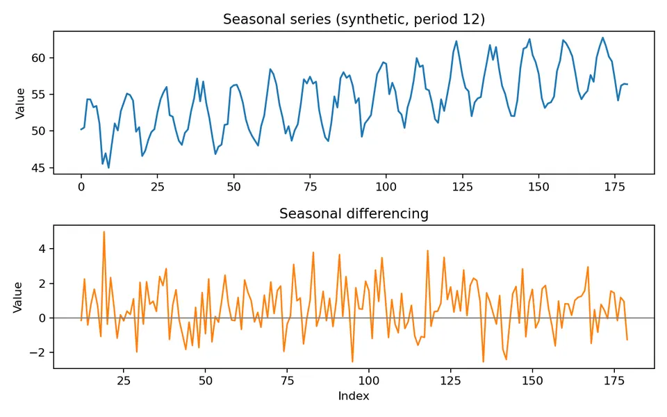
The figure shows the before-and-after effect of seasonal differencing. Repeated seasonal level shifts are reduced, but the transformation can leave ordinary trend or induce additional short-run dependence.
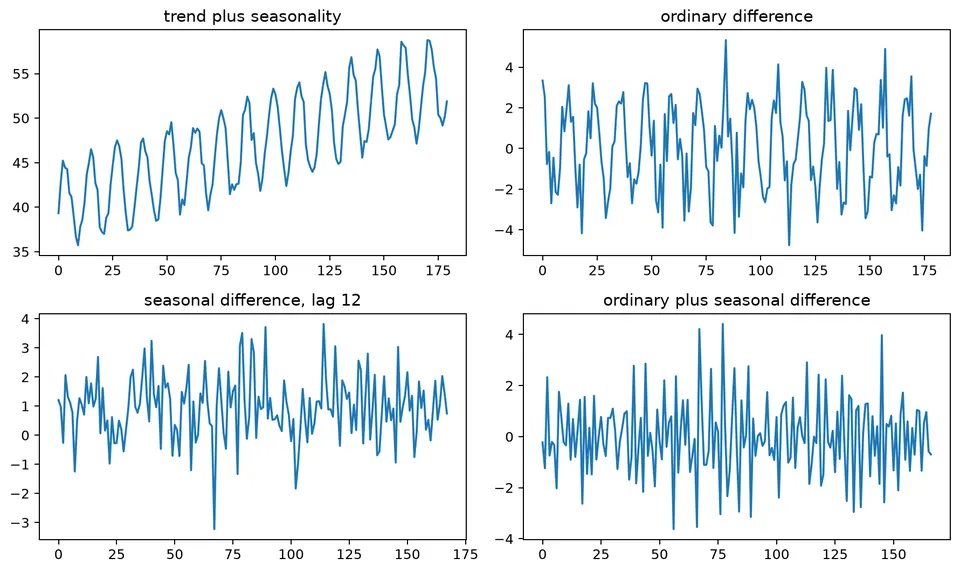
This companion view compares differencing orders and reinforces the main caution: use the smallest combination that makes the remaining process suitable for the intended model.
Trends
A trend is a systematic long-run movement in the level of a series. It can be represented deterministically, such as a linear function of time, or stochastically, such as the accumulated shocks of a random walk.
A deterministic trend is part of the expected mean path; a stochastic trend can arise because shocks accumulate in the level. Both can produce a rising realization. Their response to a shock differs: under a short-memory trend-stationary model, the path returns toward the trend; under a random walk, the new shock permanently shifts the level. Forecasts and uncertainty should follow the chosen mechanism rather than the apparent direction of one plot.
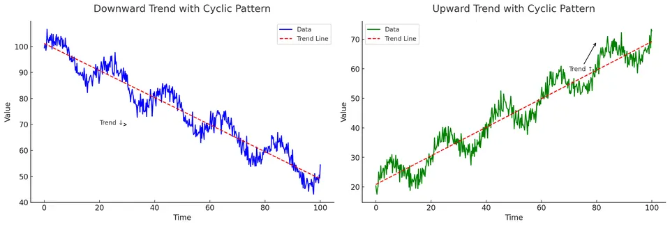
The figure provides visual examples of different long-run directions. The next step is to determine whether the apparent trend is stable, deterministic, stochastic, or interrupted by breaks.
Identifying Trends
Visual inspection is the starting point, but a slow ACF decay can result from a deterministic trend, unit root, seasonal structure, or break. Trend tests such as Mann-Kendall can detect monotone association under their assumptions, while unit-root and stationarity tests address different null hypotheses.
Use plots, domain knowledge, transformations, repeated forecast behavior, and formal tests together rather than treating any single diagnostic as definitive.
Detrending Methods
Detrending changes the representation so that the remaining series can be modeled more simply. Different methods remove different structures.
Differencing
First-order differencing is
$$ Y_t=X_t-X_{t-1}. $$
For $X_t=a+bt+u_t$, the first difference is $b+u_t-u_{t-1}$. The intercept cancels and the slope becomes a constant increment, but the noise is now differenced too. If $u_t$ was independent noise, the difference creates MA(1) dependence. For a random walk, in contrast, the first difference recovers the original new shock. Similar-looking transformed plots can therefore come from quite different operations on the stochastic part.
Second-order differencing is
$$ Y_t=X_t-2X_{t-1}+X_{t-2}. $$
It removes the constant first difference of a deterministic linear trend and can reduce higher-order polynomial behavior. In stochastic models, repeated differencing can over-difference the series and introduce unnecessary negative autocorrelation, so higher orders should be justified carefully.
Transformation
A log transformation is
$$ Y_t=\log X_t, $$
for positive $X_t$. It compresses large values and can stabilize variance when fluctuations scale with the level. It can also turn multiplicative growth and seasonality into additive structure. A log transform does not, by itself, remove a unit root or deterministic time trend.
Regression Modeling
A deterministic linear trend can be modeled as
$$ X_t=\beta_0+\beta_1t+\varepsilon_t. $$
The detrended series is the residual around the fitted line. A quadratic trend uses
$$ X_t=\beta_0+\beta_1t+\beta_2t^2+\varepsilon_t. $$
A higher-degree polynomial can track the observed record closely yet diverge sharply when evaluated beyond its endpoint. The data constrain the fitted region more directly than the extrapolation. If the scientific mechanism suggests a changing slope, compare a local trend or damped-trend model as well as polynomial fits, and judge the choice at the horizons where forecasts will actually be used.
Visualization of Trends
A level plot reveals the overall movement, while a detrended plot shows what remains after the specified trend has been removed. The comparison is meaningful only when the fitted trend is introduced explicitly and the residual is interpreted relative to that model.
Modeling Seasonality and Trends
Forecasting models incorporate trend and seasonality in different ways. The appropriate representation depends on whether the components are deterministic, evolving, stochastic, or better described through dependence at seasonal lags.
Seasonal ARIMA (SARIMA)
SARIMA combines ordinary and seasonal differencing with AR and MA terms:
$$ \Phi_P(B^s)\phi_p(B)(1-B^s)^D(1-B)^dX_t =\Theta_Q(B^s)\theta_q(B)\varepsilon_t. $$
Here $p,d,q$ describe the non-seasonal component; $P,D,Q$ describe the seasonal component; and $s$ is the seasonal period. Seasonal differencing targets repeating stochastic level structure, while seasonal AR and MA terms model dependence that remains at seasonal lags.
Exponential Smoothing State Space Models (ETS)
ETS models represent evolving level, trend, and seasonal states with recursive update equations. An additive observation structure can be thought of schematically as
$$ X_t=L_t+T_t+S_t+\varepsilon_t, $$
while multiplicative variants allow the size of errors or seasonal effects to scale with the level. Exact ETS equations depend on the selected error, trend, seasonal, and damping components; the model is more than a static decomposition identity.
Seasonal Decomposition of Time Series (STL) Forecasting
STL decomposes a transformed or untransformed series additively as
$$ X_t=T_t+S_t+R_t. $$
STL describes the observed record; a forecast must add rules for extending its components. One procedure repeats or updates the seasonal pattern and forecasts the seasonally adjusted series with a suitable dynamic model. The remainder is not automatically a separate persistent signal, nor automatically independent noise. Check its dependence before deciding whether it needs a model. In backtesting, refit the decomposition within each training window so that future observations cannot revise earlier estimated components.
The following synthetic series contains a rising trend, repeated seasonality, and random noise:
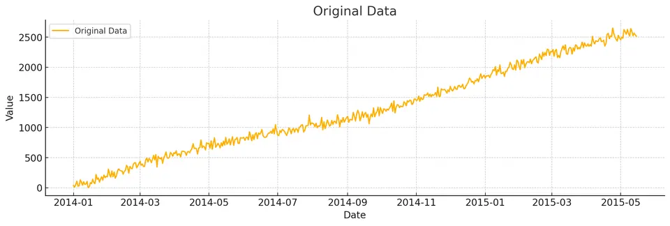
Its visible structure motivates decomposition before forecasting.
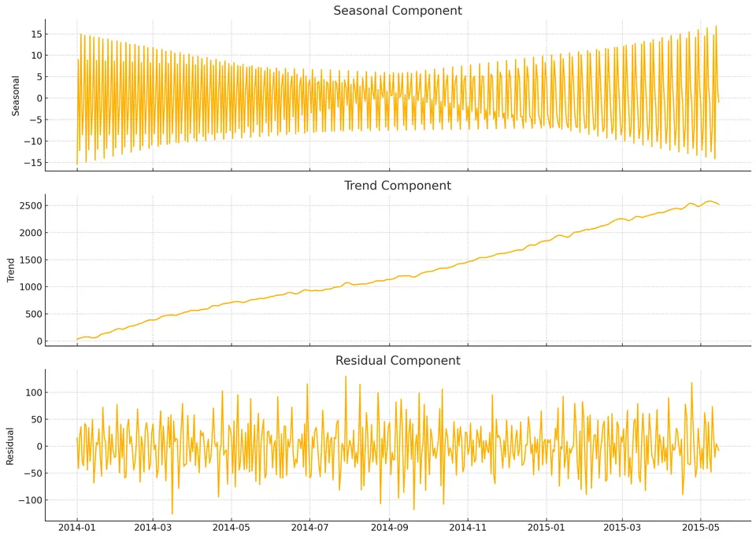
The decomposed panels separate the upward trend, repeating seasonal pattern, and remainder. The remainder should be inspected for leftover autocorrelation, changing variance, or outliers rather than assumed to be random simply because it is labeled "residual."
Seasonal scale, normalization, and forecast behavior
Seasonality can be represented through deterministic seasonal indicators, Fourier terms, seasonal differencing, seasonal AR or MA terms, a seasonal state in an exponential-smoothing or state-space model, or a seasonal-naive forecast.
These choices answer different questions. A seasonal index describes a repeating conditional mean pattern, while a seasonal AR term describes dependence after the mean structure has been accounted for.
Additive versus multiplicative numbers
Suppose the trend level is 100. An additive seasonal effect of $+10$ gives
$$ 100+10=110. $$
A multiplicative seasonal factor of $1.10$ also gives
$$ 100(1.10)=110. $$
At level 200, however,
$$ \text{additive}=200+10=210, \qquad \text{multiplicative}=200(1.10)=220. $$
If seasonal amplitude grows proportionally with level, a log transformation can make the relationship additive:
$$ \log(T_tS_t)=\log T_t+\log S_t. $$
Seasonal differencing
For monthly observations,
$$ \nabla_{12}y_t=y_t-y_{t-12}. $$
If last year's January value is 92 and this year's January value is 100, the seasonal change is 8. Seasonal differencing removes an exactly repeating seasonal level, but it does not guarantee that ordinary trend, changing variance, holiday effects, or other structure has been handled.
Combined differencing is
$$ (1-B)(1-B^{12})y_t =y_t-y_{t-1}-y_{t-12}+y_{t-13}. $$
Each difference reduces the usable sample and can introduce moving-average dependence. Use the smallest order that leaves a defensible residual process.
Seasonal indices
For an additive decomposition, seasonal indices are commonly normalized so that
$$ \sum_{j=1}^{s}\hat S_j=0. $$
For a multiplicative decomposition, factors are often normalized to have mean 1:
$$ \frac{1}{s}\sum_{j=1}^{s}\hat S_j=1. $$
The normalization fixes where the overall level lives. In an additive model, zero-mean seasonal effects leave the average level in the trend. In a multiplicative model, mean-one factors do the analogous job. An equivalent renormalization changes the reported components while preserving their reconstructed sum or product. This is why seasonal indices from two implementations can differ even when their fitted observations agree.
Trend smoothing and boundary effects
A centered moving average uses observations on both sides of time $t$. That is appropriate for historical decomposition but unavailable at the end of a live series. A trailing smoother uses only current and past observations but has different lag and phase behavior.
Software may shorten the output, pad boundaries, reflect data, or use asymmetric filters near the ends. Inspect those choices before interpreting the first and last seasonal cycles.
Seasonal validation
Assess forecasts from several seasonal positions. A monthly model evaluated only before an easy-to-predict summer period may perform differently before a volatile year-end peak. Report errors at relevant horizons such as 1, 3, 6, and 12 months and compare all methods on the same origins. The seasonal-naive forecast repeats the latest value from the corresponding season, making it a direct test of whether estimating additional seasonal dynamics adds forecasting value.
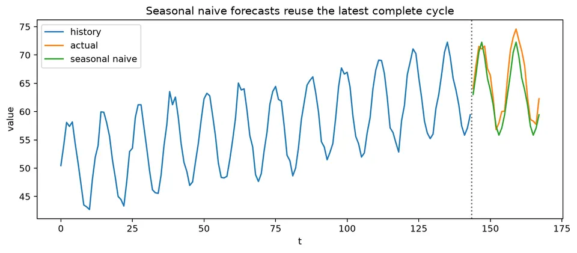
The seasonal-naive figure provides the benchmark that any more elaborate seasonal model should beat on chronologically held-out data. Repeating the most recent value from the same season is simple, but it can be difficult to improve upon when the seasonal pattern is stable.
Formula reference
| Structure / method | General formula | Notes / special case |
|---|---|---|
| Additive decomposition | $X_t=T_t+S_t+R_t$ | Seasonal amplitude is measured in the original units. |
| Multiplicative decomposition | $X_t=T_tS_tR_t$ | Useful when seasonal amplitude scales with the level. |
| Log-additive form | $\log X_t=\log T_t+\log S_t+\log R_t$ | Converts a multiplicative decomposition to an additive one for positive data. |
| Linear trend | $X_t=\beta_0+\beta_1t+\varepsilon_t$ | Constant slope. |
| Polynomial trend | $X_t=\sum_{j=0}^{k}\beta_jt^j+\varepsilon_t$ | Flexible but often unstable for long-range extrapolation. |
| Additive seasonal regression | $X_t=\beta_0+\beta_1t+\sum_{j=1}^{s-1}\delta_jD_{j,t}+\varepsilon_t$ | One seasonal category is omitted as the reference level. |
| Fourier seasonality | $S_t=\sum_{k=1}^{K}[a_k\cos(2\pi kt/s)+b_k\sin(2\pi kt/s)]$ | Compact deterministic seasonality, especially for large $s$. |
| Centered moving average, odd span | $\hat m_t=d^{-1}\sum_{j=-q}^{q}X_{t+j}$, $d=2q+1$ | Historical smoother; uses future observations relative to $t$. |
| Generic linear smoother | $\hat m_t=\sum_j a_jX_{t-j}$ | Filter weights determine smoothness and phase behavior. |
| First difference | $\nabla X_t=(1-B)X_t=X_t-X_{t-1}$ | Removes one unit-root factor; reduces a deterministic polynomial degree by one. |
| $d$th difference | $\nabla^dX_t=(1-B)^dX_t$ | Use the smallest order justified by the model. |
| Seasonal difference | $\nabla_sX_t=(1-B^s)X_t=X_t-X_{t-s}$ | Removes exactly repeating seasonal level behavior. |
| Combined difference | $(1-B)(1-B^s)X_t=X_t-X_{t-1}-X_{t-s}+X_{t-s-1}$ | Common when ordinary and seasonal integration are both present. |
| Additive seasonal normalization | $\sum_{j=1}^{s}S_j=0$ | Identification convention for seasonal effects. |
| Multiplicative seasonal normalization | $s^{-1}\sum_{j=1}^{s}S_j=1$ | Identification convention for seasonal factors. |
| Seasonal naive forecast | $\hat y_{t+h\mid t}=y_{t+h-s\lceil h/s\rceil}$ | Strong benchmark for stable fixed-period seasonality. |
| SARIMA | $\Phi(B^s)\phi(B)(1-B^s)^D(1-B)^dX_t=\Theta(B^s)\theta(B)\varepsilon_t$ | Stochastic seasonal dependence plus ordinary ARIMA structure. |
| Box-Cox transform | $g_\lambda(x)=(x^\lambda-1)/\lambda$ for $\lambda\ne0$; $g_0(x)=\log x$ | Often used to stabilize level-dependent variance before decomposition/modeling. |